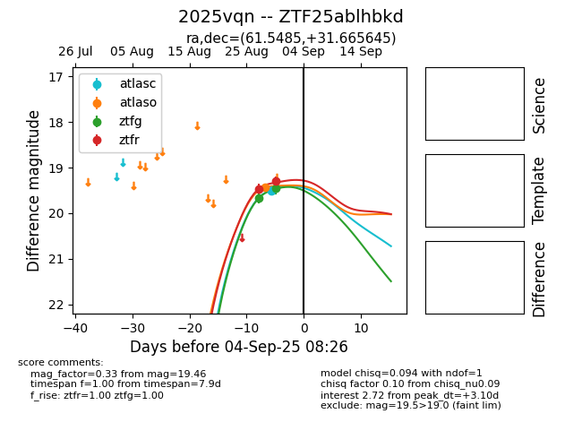

FINK: ZTF25ablhbkd
Lasair: ZTF25ablhbkd
ALeRCE: ZTF25ablhbkd
TNS: 2025vqn
YSE: 2025vqn
ZTF25ablhbkd (ztf,fink)
2025vqn (tns,yse)
equatorial (ra, dec) = (61.5485,+31.66565)
galactic (l, b) = (164.4004,-15.11050)

last atlasc=19.50, atlaso=19.44, ztfg=19.99, ztfr=19.51
1 atlasc, 1 atlaso, 5 ztfg, 5 ztfr detections